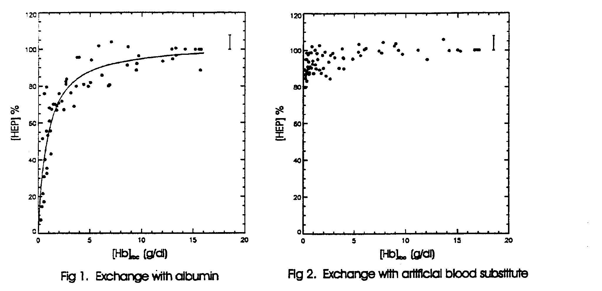

Efficacy of Blood Substitutes Determined by 31P-NMR Spectroscopy
Dear Barry,
Artificial blood substitutes are being developed for their promise as non-infectious, universally accepted, low- storage-cost alternatives to human blood. Previous attempts to replace blood have utilized perfluorocarbon emulsions or stroma-free, cross-linked or encapsulated hemoglobin solutions (1). An alternative to these approaches is to manufacture recombinant human hemoglobin (24). The efficacy of such a product with respect to oxygen transport and delivery would need to be established in vive. We have utilized 31P-NMR spectroscopy to determine the efficacy of recombinant human hemoglobin (Somatogen Inc., Boulder, Colorado), as an oxygen carrier in vive by monitoring the high-energy phosphorus metabolism of the rat abdomen during and after complete replacement of the blood by a solution of recombinant human hemoglobin.
Methods: Anesthetized cannulated rats were placed into the bore of a 1.9 Tesla horizontal magnet. Metabolite 31P NMR signals were detected with a 30 mm diameter surface coil placed over the abdomen. Time-dependent spectral data were collected in 5 min. blocks from control animals, animals whose blood was replaced with human serum albumin (HSA), containing no oxygen carrier, and from animals whose blood was replaced by a solution of recombinant human hemoglobin (rHb). Animal's hematocrits were reduced to less than 3% by isovolemic exchange transfusion. The stability of the metabolite signals over the course of the experiments was determined from the 31P Signal integrals after curve-fitting.
Results: The data obtained from control animals showed no significant changes in the metabolite levels during several hours in the magnet. The results from hour-long, albumin-exchange experiments in 5 rats are summarized in Fig. 1, where we have plotted a 15 min moving average of the concentration, normalized to its value before the exchange, of high energy phosphates (HEP), the sum of PCr and b -ATP concentration, vs., the [Hb]rbc, the hemoglobin concentration in the red blood cells. A fit of the data to a Michaelis-Menten type equation, [HEP] = Vmax[Hb]rbc /( [Hb]rbc + Km), gave a value of Km of 0.87 g/dl, indicating that the [Hb]rbc has to fall by more than a factor of 15 before a 50% drop in high- energy phosphates can be seen. For [Hb]rbc > 10.0, the mean value of [HEP] was 97.5 (± 2.2, n=10)%, while for 2.5 < [Hb]rbc < 3.5 the mean value of [HEP] was 78.5 (± 4.6, n=5)%, a value which is significantly smaller (a =0.0025) than that found at normal [Hb]rbc. At the end of the HSA exchange, for [Hb]rbc less than 1%, the animals were unstable and eventually died. Prior to death a 4-fold increase in orthophosphate and a 50 % drop in phosphocreatine and ATP was observed. The tissue pH dropped from 7.35 at the start of the experiment to 6.8 at the end.
In contrast to the albumin-exchange, exchange transfusion with recombinant human hemoglobin (5 g/dl [Hb], which is 1/3 the [Hb] of normal blood) resulted in no significant drop in high-energy phosphates no rise in low-energy phosphates, and no change in tissue pH from 7.35 + 0.15 over a period of 5 hours (data not shown). The animals given recombinant hemoglobin lived for 5-6 hours after the exchange.
Because there are sound physiological reasons to expect that free hemoglobin solutions might deliver oxygen better than whole blood (1), and because we observed no compromise in [HEP] metabolism with 5 g/dl [Hb] concentration rHb, we diluted the rHb to a concentration of only 3 g/dl [Hb], and repeated the exchange experiments. Note that we found above that there was a greater than 20% drop in [HEP] at [Hb] = 3 g/dl during HSA exchange.

Fig. 2 shows the combined results from 6 rats for an exchange transfusion with a 3 g/dl solution of rHb. For [Hb]rbc > 10.0, the mean value of [HEP] was 100.0 (± 1.6, n=9)%, while for [Hb] rbc < 1.0 the mean value of [HEP] was 91.0 (± 3.8, n=6)%, which is significantly smaller than previous value (a =0.025). All the animals continued to live at [Hb] < 1 g/dl for one-hour after the exchange was terminated, during which data was collected. At the end of this period the animals were sacrificed. Thus at a total [Hb] of 3 g/dl in the blood, the phosphorus metabolism is slightly affected but the animal remained alive.
Conclusions: Our results appear to indicate that free, extra-cellular hemoglobin performs better at sustaining high energy phosphorus metabolism than the same hemoglobin content in blood within the erythrocytes. We base this conclusion on our finding that [HEP] determined at a total [Hb] of 3 g/dl with rHb (91.0 (± 3.8, n=6)%) was found to be significantly higher (a =0.05) than that found at the same [Hb] with erythrocytes during HSA exchange (78.5 (± 4.6, n=5)%). Recombinant human hemoglobin, even at only 1/3 the normal concentration of 15 g/dl sustains vital energy-producing functions of tissues at levels which are indistinguishable from those found when whole blood is present. 31P- NMR spectroscopy was found to be a useful method for studying the efficacy of blood substitutes in this setting.
References:
(1) Winslow, R.M., Vandegriff, ICD., and Intaglietta, M. Eds. "Blood Substitutes: Physiological Basis of Efficacy" Birkhauser(Boston: 1995).
(2) S. J. Hoffman, D. L. Looker, J. M. Roerich, P. E. Cozart, S. L Durfee, J. L. Tedesco and G. L. Stetler "Expression of fully functional tetrameric human hemoglobin in Escherichia Coli" Proceedings of the National Academy of Sciences (USA) 87(1990)8521-8525.
(3) D. L. Looker, D. Abbott-Brown, P. Cozart, S. Durfee, S. Hoffman, A J. Mathews, J. Miller-Roerich, S. Shoemaker, S. Trimble, G. Fermi, N. H. Komiyama, K. Nagai, and G. L. Stetler "A human recombinant hemoglobin designed for use as a blood substitute" Nature 356(1992)258-260.
(4) T. Shen, N. T. Ho, V. Simplaceanu, M. Zou, B. N. Green, M. F. Tam and C. Ho "Production of unmodified human adult hemoglobin in Escherichia Coli." Proceedings of the National Academy of Sciences (USA) 90(1993)8108-8112.
Yours sincerely,
Laurel O. Sillerud Arvind Caprihan